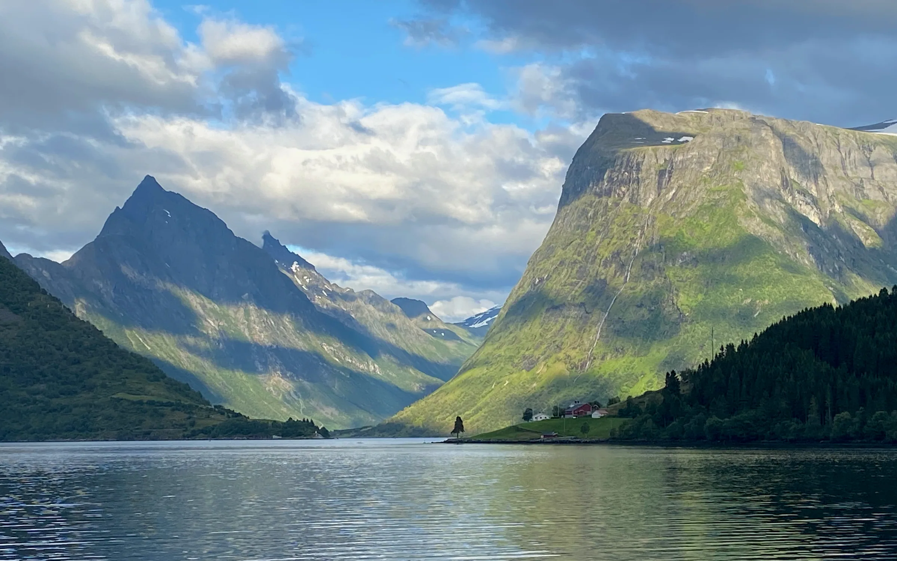
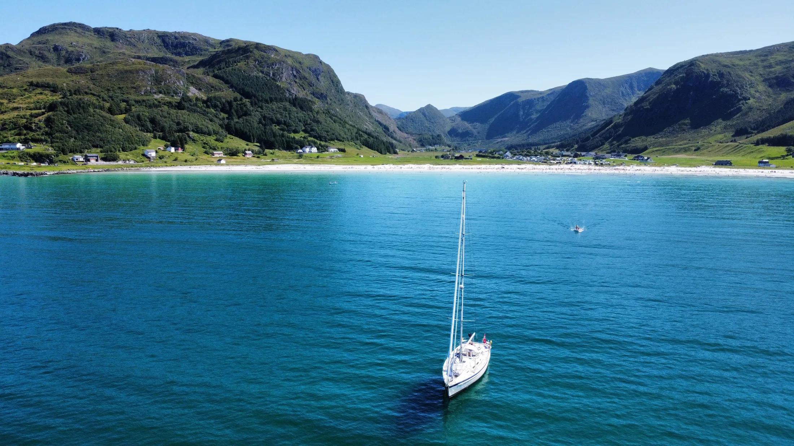

Thomas Havnegjerde
Lys langs veien
Fotografier fra steder underveis.
01
Bak kameraet
Underveis
Jeg fotograferer når lyset forandrer et kjent landskap, eller når et sted langs veien får meg til å stoppe opp.
Bildene er små minner fra turer mellom kyst, fjell og skog – øyeblikk jeg ønsket å ta med videre.
Utvalgte fotografier
Øyeblikk
02
Om
Naturlige øyeblikk
Fotografier fra turer, sjø, landskap og steder underveis.
Jeg fotograferer det som får meg til å stoppe opp – lys, landskap og små øyeblikk som blir værende.

Flere steder underveis
Se hele reisen
Utforsk fotografier fra kyst, fjell, skog og landskap som ble værende litt lenger.
Gå til galleriet